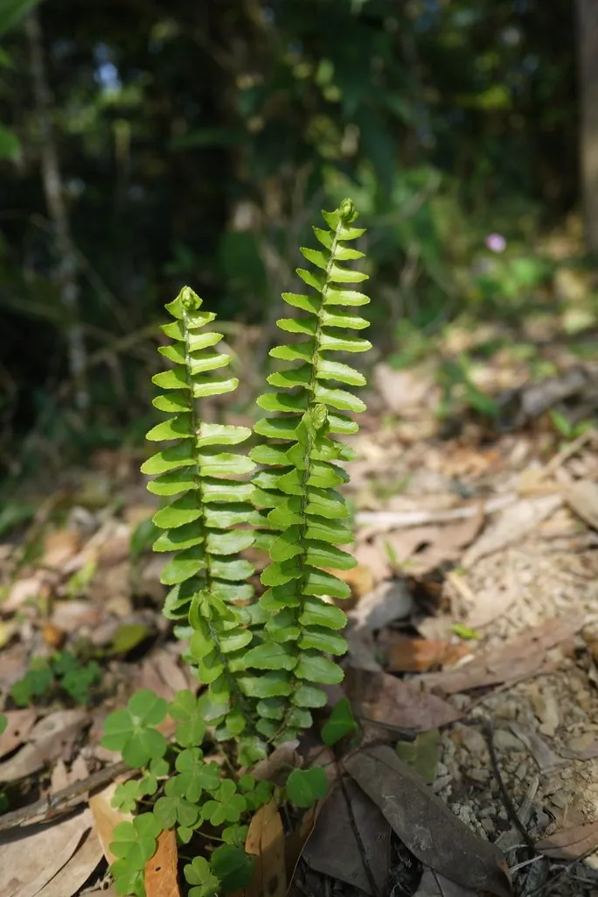

蕨类与裸子植物 · 植物界
肾蕨 Nephrolepis cordifolia

肾蕨叶片一回羽状、整齐低垂，基部小叶形如肾脏，是常见的观叶植物与切花配材，地下还长有块茎。
- 分类
- 门蕨类植物门纲水龙骨纲目水龙骨目科肾蕨科属肾蕨属
- 栖息环境
- 热带与亚热带林下、溪谷石缝和树干基部，喜温暖半阴与湿润
- 地理分布
- 原产亚洲热带与亚热带，现广泛栽培于全球温暖地区
- 保护级别
- 暂无评估；野生与栽培种群均常见
物种志
肾蕨是肾蕨科多年生草本蕨类，株高 30–80 cm。它的根状茎直立或斜生，向下长出匍匐茎，匍匐茎上能生出球形块茎，块茎富含淀粉。叶片为一回羽状复叶，羽片多数，披针形，基部偏斜，上侧呈耳状突起，下侧较圆，边缘有细锯齿，整片叶子鲜绿色并向外弧形低垂。孢子囊群肾形，着生于小脉顶端，成熟时呈褐色。
肾蕨原产亚洲热带与亚热带地区，喜温暖湿润、半阴环境，常附生于树干或石缝中，耐旱性中等。它可以通过孢子繁殖，也能用匍匐茎上的块茎和分株繁殖，生长迅速，容易蔓延成片。由于叶形优美、耐阴易养，肾蕨被广泛用于盆栽、吊篮与花艺配叶；在南方部分地区它逸生为杂草。块茎与全草还可入药，有清热利湿、宁肺止咳之效。
形态与习性
- 株高30–80 cm
- 叶一回羽状复叶，羽片基部偏斜
- 块茎生于匍匐茎上，富含淀粉
- 光照喜半阴环境，忌烈日直射
- 繁殖孢子、块茎或分株繁殖
- 用途观叶盆栽与切花配叶
- 药用块茎与全草清热利湿
趣味知识
- 肾蕨的地下匍匐茎会结出球形小块茎，是它的“备用粮仓”。
- 它是花艺中使用最多的蕨类配叶之一，被称为“排草”。
- 在温暖地区肾蕨容易逸生，有时被视为入侵性杂草。